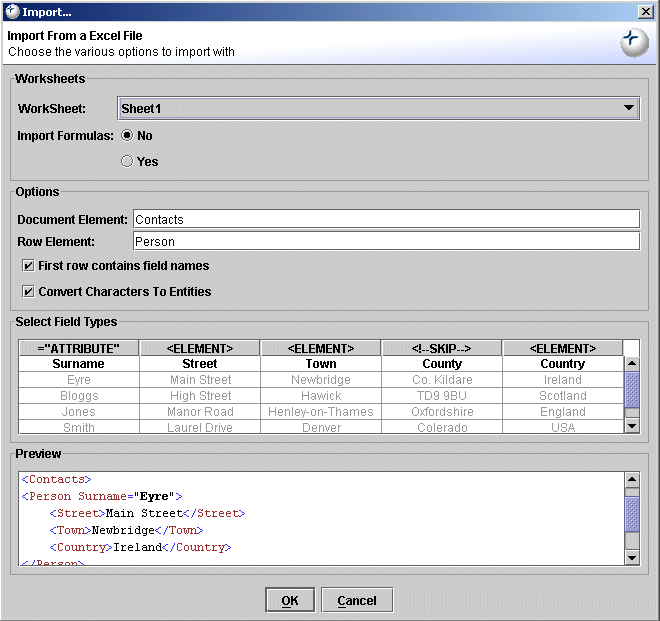
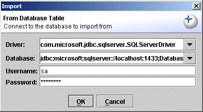
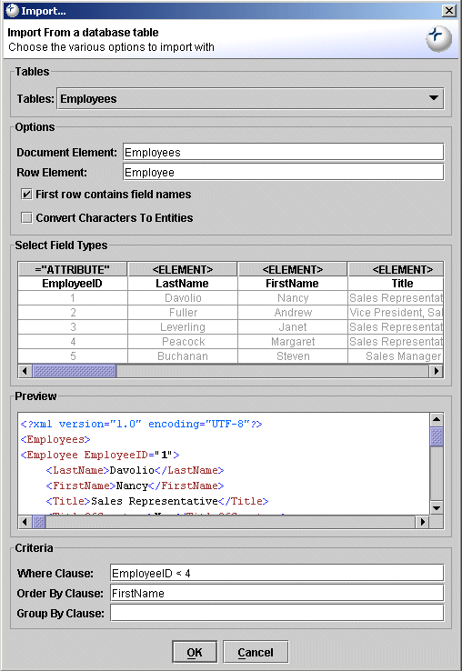
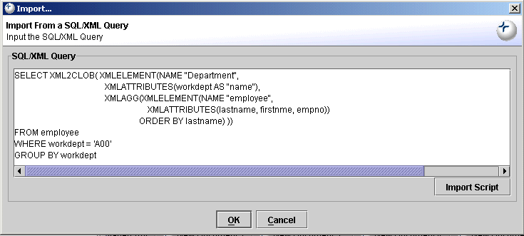

Exchanger XML provides a number of ways to import from various external data sources including structured text files, Excel spreadsheets and database tables.
Select File->Import->From Text File ... and set the Location URL to projects/Import Text/input/assets.txt In the Options section of the Import... dialog, set the Document Element to be Assets and the Row Element to Item. The Field Delimiter defaults to Comma, but can be set explicitly in the drop down if required. If the data contains characters such as < or &, then ensure that these special characters are escaped with entities by checking the appropriate tick box. The input data is displayed in the Dialog in tabular form above a Preview containing an example of what the generated XML will look like.

Figure 1. Import From Text File
The first row of this particular input file contains field names and these will be used as tokens in the created XML file. However, the field names (along with all other values) can be edited directly in the tabular preview by double-clicking on the desired item and entering the required value.
By default, all data items in the input will be converted to element content, but this can be over-ridden by clicking on the individual column headers. Clicking once on a column header will cause the data from this column to be used as attribute values on the row elements, rather than as separate child elements. Clicking a second time will cause the column's data to be ignored when generating the XML file. Repeatedly clicking on the column header will cycle through the 3 different options. For the CompanyID and AssetID columns, set the field type to ="ATTRIBUTE" and for some other columns, set the type to <!--SKIP--> and the Preview should adjust accordingly. Now, click OK and the complete XML file corresponding to the input data will open in the editor.
Select File->Import->From Excel File... and set the Location URL to projects/Import Excel/input/sample.xls In the Worksheet section of the Import... dialog, choose Sheet 1 in the drop down menu, and set Import Formulas to No. Set the Document Element to Contacts and the Row Element to Person. The input data is displayed in the Dialog in tabular form above a Preview containing an example of what the generated XML will look like.
Figure 2. Import From Excel File
The first row of this particular input file contains field names and these will be used as tokens in the generated XML file. However, the field names (along with all other values) can be edited directly in the tabular preview by double-clicking on the desired item and entering the required value.
By default, all data items in the input will be converted to element content, but this can be over-ridden by clicking on the individual column headers. Clicking once on a column header will cause the data from this column to be used as attribute values on the row elements, rather than as separate child elements. Clicking a second time will cause the column's data to be ignored when generating the XML file. Repeatedly clicking on the column header will cycle through the 3 different options. For the Surname column, set the field type to ="ATTRIBUTE" and for the County column, set the type to <!--SKIP--> and the Preview should adjust accordingly. Now, click OK and the complete XML document corresponding to the input Excel spreadsheet will open in the editor.
When importing data from database tables, the appropriate JDBC drivers must be made available to the application using the System tab in the File->Preferences dialog. The JDBC-ODBC bridge is automatically included by default and can be used to easily access SQL Server databases, among others. See the Preferences section of this documentation for more details on adding Jar/Zip files for other drivers to the application. Select File->Import->From Database Table... and enter the connection details.
Using the JDBC-ODBC bridge, the Driver field is sun.jdbc.odbc.JdbcOdbcDriver while the Database field will be similar to jdbc:odbc:LocalServer.

Figure 3. Import From Database Using ODBC
Using the Microsoft Type 4 Driver, the corresponding fields would be something like com.microsoft.jdbc.sqlserver.SQLServerDriver and jdbc:microsoft:sqlserver://localhost:1433;DatabaseName=Northwind;
Figure 4. Import From SQL Server Database
Using the LGPL version of the MySQL driver that is bundled with Exchanger XML, the Driver field is org.gjt.mm.mysql.Driver while the Database field will be similar to jdbc:mysql://localhost:3306/testdb.

Figure 5. Import From MySQL Database
Enter the appropriate Username and Password, and click OK. In the Import... dialog, choose the appropriate Table and set the Document Element and Row Element as required. If the data contains characters such as < or &, then ensure that these special characters are escaped with entities by checking the appropriate tick box. (If the database contains Blobs of valid XML, then there is no need to perform this escaping). Select the field types as described in the preceding sections and enter criteria for the Where, Order By, and Group By clauses at the bottom of the dialog, as necessary. Now, click OK and the complete XML document corresponding to the database table will open in the editor.
Figure 6. Import From Database Table
A number of databases, including IBM DB2 and Oracle, support a standard mechanism for automatically generating XML output from SQL-like queries. Ensure that the correct JDBC drivers have been added to the application and then select File->Import->From SQL/XML Query....... Enter the appropriate Driver, Databse, Username and Password in the connection dialog, and click OK.

Figure 7. Import From SQL/XML Query
For the IBM DB2 Universal Driver, the Driver field is com.ibm.db2.jcc.DB2Driver while the Database field will be similar to jdbc:db2://localhost:50000/SAMPLE. In the popup window, either manually type in a query or use the Import Script button and select the file sample.sqx from the Import SQL/XML project.
Figure 8. Import SQL/XML Script
Press OK and the query results will be displayed in the Editor. Note that SQL/XML will not always return valid XML - often, the returned elements will need to be surrounded by a root element.